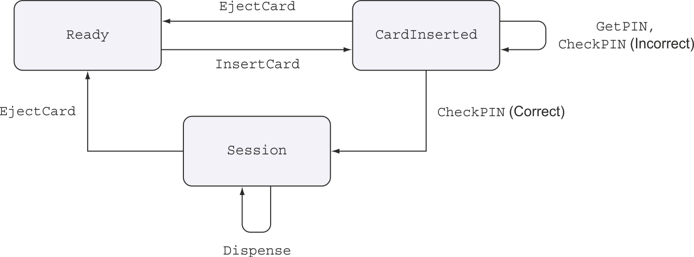

Modeling state machines with dependent types in Haskell: Part 2
This post is “literate” haskell (thanks to markdown-unlit), it can be run from the site repo using GHC 8.8.3 with stack run atm.
You may want to read first “Modeling state machines with dependent types in Haskell: Part 1”, - this post builds upon it and answers the questions raised there.
If you used singletons package and aware of the state of dependent types support in Haskell (that is, no support, but good workarounds allowing to emulate them), it should be ok to read independently.
Why?
In the first part I wrote about the motivation to use dependent types, but having read a post by Alexis King “Parse don’t validate” about static type systems, I had an analogy to add to the motivation that is in this post title:
dependent types to code are what static types to data
In the same way the static type systems ensure data validity by construction and prevent writing code that expects or creates invalid data, dependent types can ensure code validity on the code flow, logic and state transitions level.
Questions to cover
The part 1 left open these questions:
- How can we write code with dependently typed actions in a more conventional way with
donotation. - How to make actions return results and to have state changes depend on these results.
The ATM (cash machine) example for the second question is borrowed from the excellent book by Edwin Brady: “Type driven development with Idris”. Even if you are not interested in Idris, I highly recommend this book, as it could give you many ideas for writing code in any language - particularly in Haskell, as Idris is syntactically very similar, but with the types as first class citizens and full dependent types support.
We will use singletons library and we will need to enable “a few” GHC extensions:
{-# LANGUAGE DataKinds, FlexibleInstances, GADTs, InstanceSigs,
LambdaCase, PolyKinds, ScopedTypeVariables, TemplateHaskell,
TypeApplications, TypeFamilies, UndecidableInstances #-}
{-# OPTIONS_GHC -Wall -Werror=incomplete-patterns #-}
{-# OPTIONS_GHC -fno-warn-unticked-promoted-constructors #-}
import Control.Monad (void, forever)
import Control.XFreer
import Control.XMonad
import Data.Kind
import Data.Singletons ()
import Data.Singletons.THDependent types ergonomics
Let’s deal with the first question first - how to write dependently typed code so it looks, well, like code.
Consider a super simple not-so-abstract example of some state transitions:
data ToggleState = On | Off
deriving (Show, Read, Eq)
data Command (s :: ToggleState) (s' :: ToggleState) a :: Type where
TurnOn :: Command Off On a
TurnOff :: a -> Command On Off b
(:>>=) :: Command s1 s2 a -> (a -> Command s2 s3 b) -> Command s1 s3 bIt defines Command type with two constructors parameterized on the result type that change the type-level state from On to Off and back. The last constructor allows chaining them. It is very much like a monadic bind, but it is parameterized on the toggle state to ensure that the sequence is type-aligned, that is the final type of the first argument is the same as the initial type of the second, and the combined type also matches.
We can define a functor instance for this type, but because of the parameterization we cannot define Applicative and Monad. Relatively well covered concept that allows to abstract what is needed here is called parameterized monads - I will not go the into details here, please review it in other sources:
- Parameterized monads by Oleg Kiselev
- Thinking with Types (Indexed monads chapter) by Sandy Maguire
Rather than defining the instances of indexed applicative and monad by hand, it is possible to use indexed freer monads - an evolution of freer monads generalized to indexed monads. It has also been covered in Parameterized extensible effects and session types by Oleg Kiselev.
These are all fascinating subjects that probably deserve a separate tutorial-style post, please let me know if you have seen it or if you wrote it.
Long story short, we will use freer-indexed package to create functor, indexed applicative (XApplicative) and indexed monad (XMonad) instances of a derived type with just a few lines of code without the need to manually define monadic operations:
data Command' (s :: ToggleState) (s' :: ToggleState) res :: Type where
TurnOn' :: Command' Off On a
TurnOff' :: a -> Command' On Off b
type Cmd = XFree Command'A modified Command' type does not need to define its own bind constructor, instead it can use XMonad instance of XFree Command' type - the same approach that is used in algebraic effects systems. Command' is in essence an algebraic effect (without any means to compose it with other effects though). XFree is defined in this way in freer-indexed:
data XFree f p q a where
Pure :: a -> XFree f p p a
Bind :: f p q x -> (x -> XFree f q r a) -> XFree f p r a
xfree :: f p q a -> XFree f p q a
xfree fa = Bind fa PureSo XFree gives you an indexed monad to your algebraic effect. Cmd type created with XFree is the easiest to use with functions turnOn and turnOff, rather than with XFree constructors:
turnOn :: Cmd Off On a
turnOn = xfree TurnOn'
turnOff :: a -> Cmd On Off b
turnOff = xfree . TurnOff'Now, having briefly covered the required abstractions, let’s get over to syntax. To use these indexed monads with do GHC has an extension RebindableSyntax that, regardless its reputation of redefining too many things at once, is quite useful here - it allows to redefine >>= and >> to be used with indexed monads, and once it is done they can be used with do. The downside is that you cannot combine indexed and normal monads in the same module. It should become better when the new extension QualifiedDo is available.
With all these great things we can now write:
{-# LANGUAGE RebindableSyntax #-}
import Control.XMonad.Do
import Prelude hiding ((>>), (>>=))
toggle :: Cmd Off Off Int
toggle = do
m <- turnOn
turnOff mor without do notation:
toggle :: Cmd Off Off Int
toggle = turnOn >>=: \m -> turnOff mand it wouldn’t have compiled if state transitions didn’t match.
>>=: and >>: operations for indexed monads are defined in freer-indexed package - it also provides all other monadic operations similar to those defined in Control.Monad, but for indexed monads, e.g. >=>:, xjoin etc.
Dependent types for real
Onwards and upwards from here. Having all the necessary indexed monadic machinery in place, we can now get to the main issue at hand: how to make state changes expressed on the type level dependent on the data-level results of the previous actions - that is what dependent types are about.
As promised, the ATM example from the book by Edwin Brady will be implemented here in Haskell.
The possible state transitions of our ATM are shown on the diagram below - it is reproduced here from the book with the kind permission of the publisher, Manning Publications.

The main thing here is that we want to ensure, on the type level, that the money can be dispensed only if the correct PIN provided at the run time.
We will need to have the state of the ATM available both in types, and also at run-time, so we need to create singleton types for them:
$( singletons
[d|
data ATMState = Ready | CardInserted | Session
deriving (Show)
|]
)This is a constraint type family for type-level check that the ATM has card in it:
type family HasCard (s :: ATMState) :: Constraint where
HasCard CardInserted = ()
HasCard Session = ()We will also need the types and singletons to define command result on which our state transition depends:
$( singletons
[d|
data PINCheck = CorrectPIN | WrongPIN
deriving (Show)
|]
)
$( promoteOnly
[d|
pinCheckToState :: PINCheck -> ATMState
pinCheckToState = \case
CorrectPIN -> Session
WrongPIN -> CardInserted
|]
)pinCheckToState expresses the state transition dependency that we need - if the correct PIN is provided, the state can change to Session that allows dispensing money. But if the PIN is incorrect, the ATM will remain in CardInserted state and getting money from it will be prohibited on the type level.
Same as in the example in part 1, based on the function pinCheckToState singletons package creates type family and function on singletons.
Now we can define the type for all allowed ATM commands:
type PIN = String
data ATMCommand (s :: ATMState) (s' :: ATMState) a :: Type where
InsertCard ::
ATMCommand Ready CardInserted ()
EjectCard ::
HasCard s => ATMCommand s Ready ()
GetPIN ::
ATMCommand CardInserted CardInserted PIN
CheckPIN ::
PIN -> ATMCommand CardInserted CardInserted PINCheck
StartSession ::
SPINCheck p -> ATMCommand CardInserted (PinCheckToState p) ()
GetAmount ::
HasCard s => ATMCommand s s Int
Dispense ::
Int -> ATMCommand Session Session ()
Message ::
String -> ATMCommand s s ()You can check with the state transition diagram that this type correctly expresses all allowed state transitions. StartSession command final state depends on whether the PIN was correct.
Unlike the elevator code from part 1, we will not write ATM code with these constructors, as we did not define a constructor to bind these commands in a sequence. Instead we will use indexed free monad covered above to create our building blocks for the ATM program:
type ATMCmd = XFree ATMCommand
insertCard :: ATMCmd Ready CardInserted ()
insertCard = xfree InsertCard
ejectCard :: HasCard s => ATMCmd s Ready ()
ejectCard = xfree EjectCard
getPIN :: ATMCmd CardInserted CardInserted PIN
getPIN = xfree GetPIN
checkPIN :: PIN -> ATMCmd CardInserted CardInserted PINCheck
checkPIN = xfree . CheckPIN
startSession :: SPINCheck p -> ATMCmd CardInserted (PinCheckToState p) ()
startSession = xfree . StartSession
getAmount :: HasCard s => ATMCmd s s Int
getAmount = xfree GetAmount
dispense :: Int -> ATMCmd Session Session ()
dispense = xfree . Dispense
message :: String -> ATMCmd s s ()
message = xfree . MessageThat’s a bit of the boilerplate - you would have to do the same with any algebraic effect system (or use template haskell in case of polysemy).
Now, using RebindableSyntax, we can write code using do.
atm :: ATMCmd Ready Ready ()
atm = do
insertCard
message "Hello"
pin <- getPIN
pinOK <- checkPIN pin
case pinOK of
FromSing ok -> do
startSession ok
case ok of
SCorrectPIN -> do
amount <- getAmount
dispense amount -- this command would fail to compile in SWrongPIN branch
ejectCard
message "Remove card and cash"
SWrongPIN -> do
message "Incorrect PIN"
ejectCardCompare how similar the Idris code from the book is to Haskell code we just wrote. Even though emulating dependent types requires some workarounds in Haskell, the ergonomics are quite decent.
What we have above is a data structure yet to be interpreted, but it very much looks like code. The type-level state transitions depend on whether the PIN is correct, and if you try to trick our ATM into giving you 100 without a valid PIN by adding dispense 100 into the SWrongPIN branch, the code will not compile - exactly as we wanted.
The main difference with Idris code is that in Haskell the transition between PIN check result on the data level (pinOK) and the type level (ok) has to be explicit with FromSing pattern, and we needed a separate command startSession to change type-level state based on PIN check.
The above is not the actual code that runs if you execute this post - it is used in atm-state-machine repo. As I wrote, RebindableSyntax does not allow combining indexed and normal monads in the same file, and we need an interpreter that uses IO monad to execute this code.
Fear not, the code above can be re-written without do - it even looks almost like code:
atm' :: ATMCmd Ready Ready ()
atm' =
insertCard
>>: message "Hello"
>>: getPIN
>>=: checkPIN
>>=: \(FromSing ok) ->
startSession ok
>>: case ok of
SCorrectPIN ->
getAmount
>>=: dispense
>>: ejectCard
>>: message "Remove card and cash"
SWrongPIN ->
message "Incorrect PIN"
>>: ejectCardTo execute our ATM program we need to interpret it. We will make a console demo, but it could have been connected to the real ATM:
runATMCmd :: ATMCommand s s' a -> IO a
runATMCmd InsertCard = do
putStrLn "Insert card (press enter)"
void getLine
runATMCmd EjectCard = putStrLn "Card ejected"
runATMCmd GetPIN = do
putStrLn "Enter pin:"
getLine
runATMCmd (CheckPIN pin) =
if pin == "1234"
then return CorrectPIN
else return WrongPIN
runATMCmd (StartSession _) = return ()
runATMCmd GetAmount = do
putStrLn "Enter amount:"
read <$> getLine :: IO Int
runATMCmd (Dispense cash) = putStrLn $ "Here is " ++ show cash
runATMCmd (Message msg) = putStrLn msgNote how StartSession does nothing here - but it ensures correct type-level state transition.
This interpreter only knows how to execute individual commands, but we also need the interpreter to execute ATM program - for that we need to interpret Pure and Bind constructors of XFree:
runATM :: ATMCmd s s' a -> IO a
runATM (Pure x) = return x
runATM (Bind c f) = runATMCmd c >>= \x -> runATM (f x)Let’s run it!
The code to run our ATM program is very simple:
main :: IO ()
main = runATM $ forever atm'Why were we able to use forever from Control.Monad with our ATM program? Isn’t atm' an indexed monad, and forever is defined for normal monads?
The reason we could do so is because freer-indexed defines Applicative and Monad instances for indexed free monads with the same initial and final states. So even though our ATM program uses indexed monads internally, it can be embedded into normal monads.
This is quite important - dependent types and indexed monads are not all or nothing proposition. You can use indexed monads only for some small critical part of your code where you want additional type-level safety, and use normal monads in the rest of your code.
This is it! You can run the code right from this post by cloning the site repo and executing stack run atm. The source code without the text is available in atm-state-machine.
Unsolved problems
- It was a bit annoying to write two interpreters where we should have only needed one. Interpreting ATM commands we created ourselves is fine, but interpreting
XFreeconstructors that we have only seen once, could be better done in the library. A good exercise would be to write a generic interpreter to have any command executed in any monad, not onlyIO. It would acceptrunATMCmdas a parameter, but writing its type is a good challenge in itself. So, if we had this function, we could get our runATM interpreter in this way:
runATM :: ATMCmd s s' a -> IO a
runATM = runXFree runATMCmdIt would be great to add runXFree function to freer-indexed.
- While what we did here is very similar to algebraic effect systems generalized to indexed effects, the huge difference is that our ATM effect is not composable. If we only needed to track one resource state on the type level, or the resources were independent, we could get away with it - their logic can be written separately and embedded into normal monads or effects as we did with
forever atm'.
But real life is rarely that simple - what starts as separated often becomes interconnected later.
Generalizing freer-simple effects to indexed monads would be an interesting project - so far I got stuck with it in the branch of freer-indexed.
What’s next?
A generalization of this approach can be used to model distributed state transitions with multiple system participants, each having their own view on the system state.
A non-trivial problem is to define an interaction / communication protocol on the type level in such a way that it can be used to write both protocol scenarios with all participants involved and also separate implementations for participants in a type-safe way, using the same protocol type.
Solving the problem of modelling distributed state transitions might be part 3 some day.